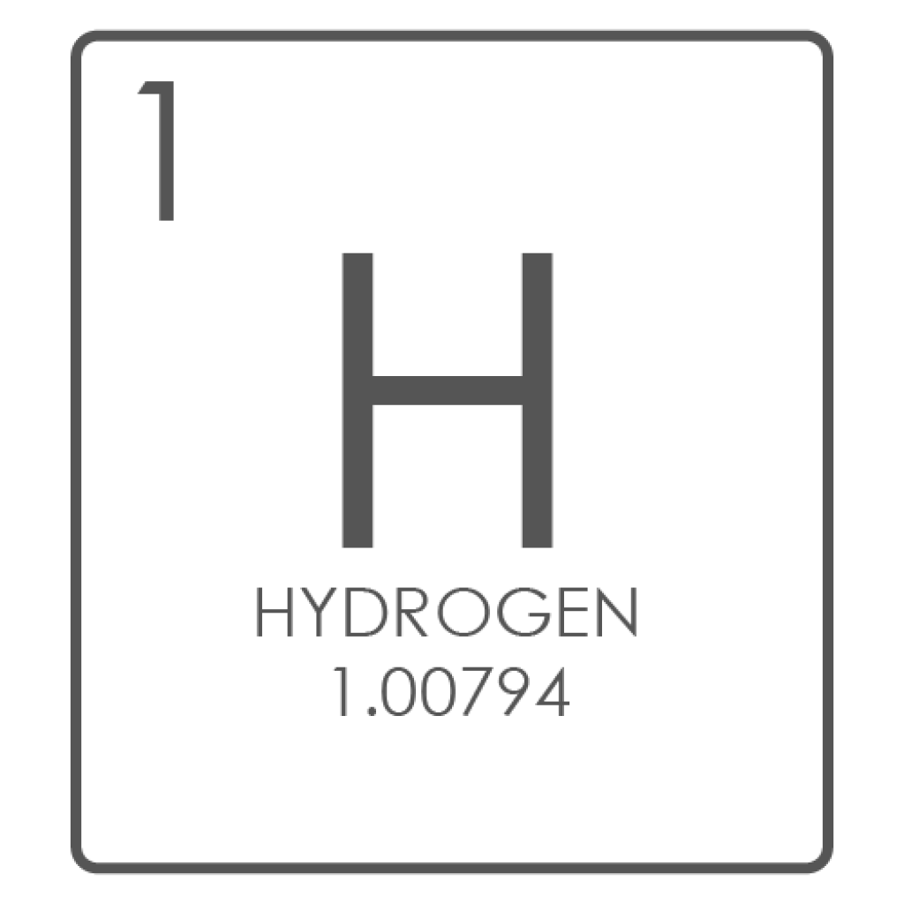
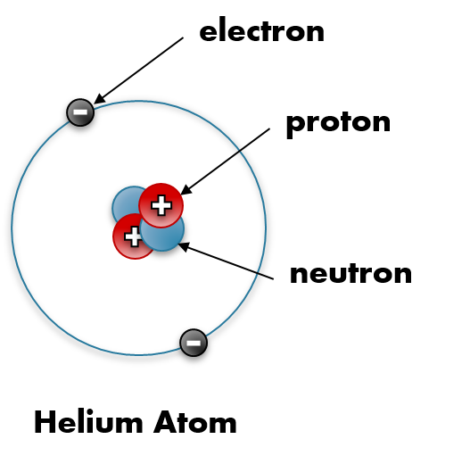

Welcome to the world of elements


Hydrogen is a chemical element it has symbol H and atomic number.
It is the lightest element and, at
standard conditions, is a gas of diatomic molecules
with the formula H2, sometimes called dihydrogen,[11]
but more commonly called
hydrogen gas, molecular hydrogen or simply hydrogen.

Helium (from Greek: ἥλιος, romanized: helios, lit. 'sun') is a chemical element; it has symbol
He and atomic
number
2. It is a colorless, odorless, tasteless, non-toxic, inert, monatomic gas
and the first in the noble gas
group in
the periodic table.[a] Its boiling point is the lowest among
all the elements, and it does not have a
melting point
at standard pressures.
Beryllium is a chemical element; it has symbol Be and atomic number 4. It is a steel-gray,
hard, strong,
lightweight and brittle alkaline earth metal. It is a divalent element that occurs
naturally only in
combination with other elements to form minerals. Gemstones high in
beryllium include beryl (aquamarine, emerald, red beryl) and chrysoberyl.